<!-- <!DOCTYPE html>
<html lang="en">
  <head>
    <meta charset="UTF-8" />
    <meta http-equiv="X-UA-Compatible" content="IE=edge" />
    <meta name="viewport" content="width=device-width, initial-scale=1.0" />
    <link
      rel="shortcut icon"
      href="../images/icons/aldiv-logo.jpeg"
      type="image/x-icon"
    />
    <link rel="stylesheet" href="../css/publications.css" />
    <title>ALDIV</title>
  </head>
  <body>
    <main>
      <section id="Publications" class="publications-section">
        <h1>Activités Réalisées</h1>
        <h2>Province du Sud-Kivu: <span>Territoire de Kabare</span> </h2>
        <div class="activities">
          <div class="activity act-1">
            <h4>1. Eau, Hygiène et Assainissement</h4>
            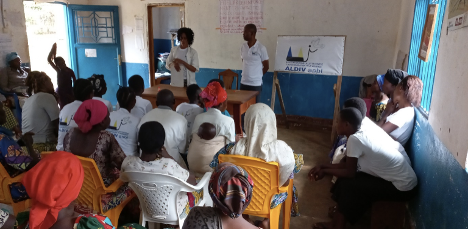
            <p>
              Sensibilisation sur la prévention et la lutte contre les maladies
              hydriques et infections sexuelles dans le village de Cikumbo en
              groupement de Luhihi au Nord-Est du territoire de Kabare au profit
              de 300 ménages.
            </p>
            <hr />

            <div class="img-container">
              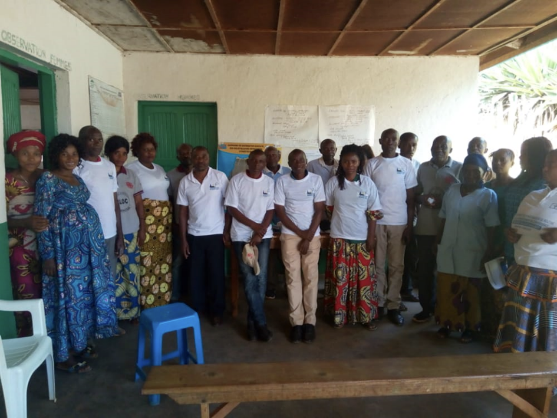
              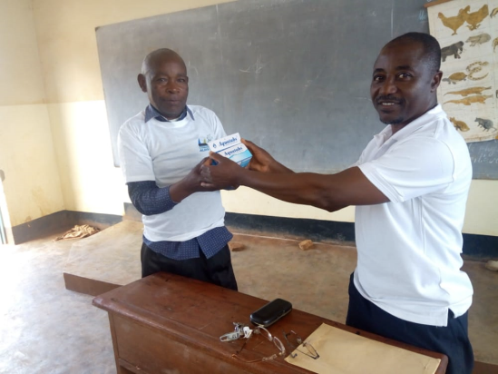
            </div>

            <p>
              Sensibilisation sur les maladies hydriques et distribution des
              comprimés aquatabs pour la désinfection de l’eau dans le
              groupement d’Ishungu au Nord-Est du territoire de Kabare au profit
              de 120 ménages.
            </p>
          </div>
          <div class="activity act-2">
            <h4>2. Environnement et Conservation de la nature</h4>
            <div class="img-container">
              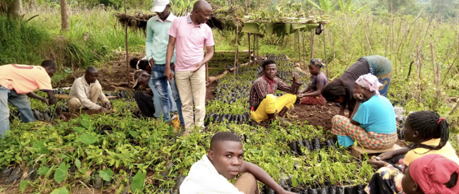
              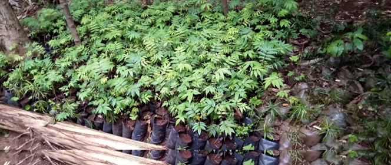
            </div>
            <p>
              Mise en place des pépinières agroforestières : 300000 plantules
              prêtes pour le repiquage
            </p>
          </div>
          <div class="activity act-3">
            <h4>3. Mise en place des pépinières agroforestières</h4>
            <ul>
              <li>La culture maraichère: tomates, choux, aubergines;</li>
              <li>Légumineuses: haricots, soja;</li>
              <li>Tubercules: maniocs, patates douces, ignames, colocases;</li>
              <li>Céréales: maïs et sorgho.</li>
            </ul>
            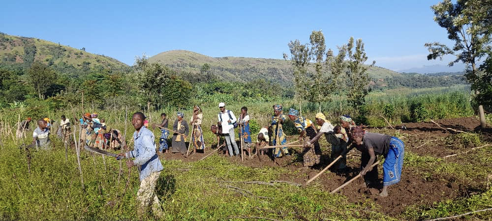
            <p>Préparation du terrain d’Aldiv pour les cultures vivrières</p>
            <hr />
            <div class="img-container">
              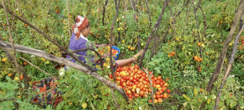
              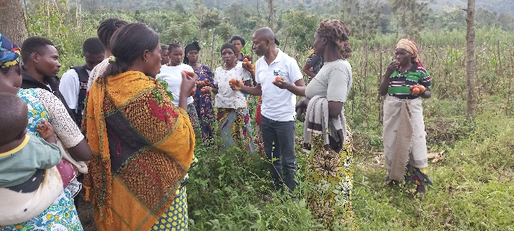
            </div>
            <p>Récolte des tomates au champ d’ALDIV à Luhihi</p>
          </div>
          <div class="activity act-4">
            <h4>4. Protection de l’enfant</h4>
            <h5>
              Afin de s'enquérir de la vulnérabilité des enfants en groupement
              de Luhihi, ALDIV a effectué des visites de moniring sur le terrain
              et s'est rendu compte que beaucoup d’enfants sont abusés dans
              cette contrée à cause de la précarité socioéconomique des ménages
              incapables d'envoyer leurs enfants à l'école
            </h5>
            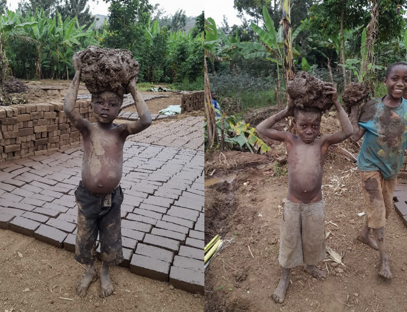
            <p>Enfants travaillant dans une briqueterie à Luhihi</p>
            <hr>
            <div class="img-container">
              <figure>
                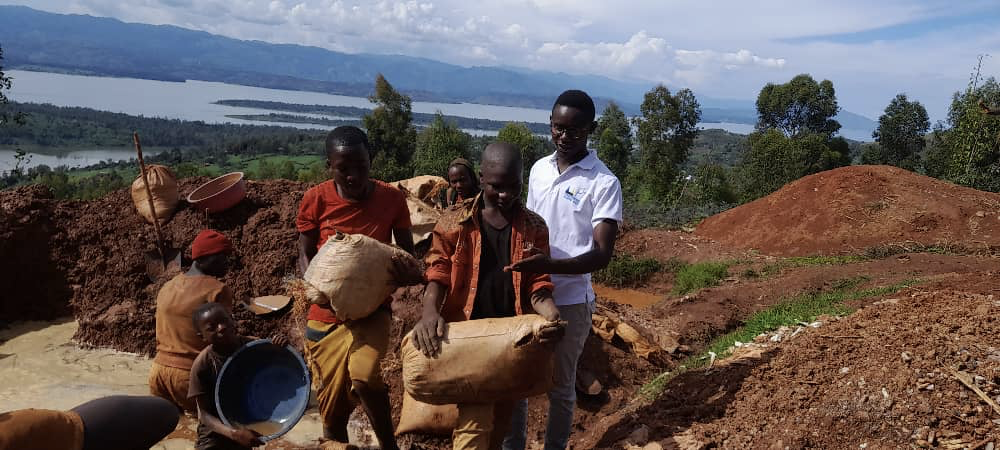
                <figcaption>Enfants exploitants artisanaux d’Or à Luhihi</figcaption>
              </figure>

              <figure>
                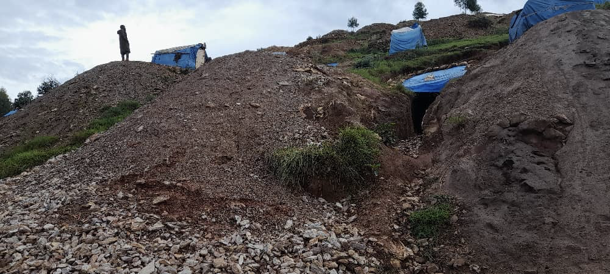
                <figcaption>
                  Grotte servant d’habitation aux enfants creuseurs d’or à
                  Luhihi
                </figcaption>
              </figure>
            </div>
          </div>

          <div class="activity act-5">
            <h4>5. Perspectives d’avenir</h4>
            <ul>
              <li>
                Leadership, bonne gouvernance et résolution pacifique des
                conflits
              </li>
              <li>Lutter contre les Violences Basées sur le Genre (VBG)</li>
              <li>Relèvement communautaire et autonomisation de la femme</li>
              <li>Assistance aux populations victimes des conflits armés</li>
              <li>
                Promotion des AVEC (Association Villageoise d’Epargne et de
                Crédit) par l'aquaculture et le petit commerce
              </li>
            </ul>
          </div>
        </div>
      </section>
    </main>
  </body>
</html> -->
